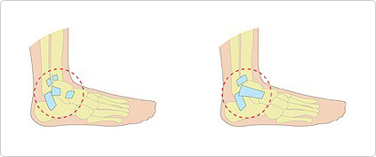

Ankle sprain is an injury involving one or more out of the three ligaments of the ankle. It is desirable to cure as fast as possible. People usually think that a sprained ankleis not a big deal and as a resultthe condition evolves into a severe ankle sprain that leads to loweringof the functionality of the ankle and arthritis.
